Девять практиков показали свои системы изнутри — с цифрами, схемами и граблями, на которые успели наступить.
Про нейросети в франчайзинге говорят много, а показывают мало. Обычная конференция по теме выглядит так: спикер рассказывает, что будущее уже наступило, показывает слайд с роботом и уходит. Полезного — ноль.
Мы собрали другой состав. Позвали тех, кто уже перевёл часть операционки на агентов и может показать экран: вот дашборд, вот переписка агента с партнёром, вот цифры до и после. Никакой теории про сингулярность — только то, что работает в сетях от 50 до 2700 точек.
Ниже — главное из каждого выступления. Если захочется подробностей, полные записи лежат в закрытом чате «Масштаб».
Есть два подхода к любой технологической новинке: нанять специалиста и не разбираться или разобраться самому. В случае с нейросетями работает только второй. Если собственник не понимает возможностей технологии, у него не возникнет идей, как применить её именно в своём бизнесе — а специалист со стороны этих идей не придумает, он не знает бизнес изнутри.
Десять лет назад альтернативой был наём: человеку нужна зарплата, отпуск, ипотека. Агенту нужно электричество и видеокарты — и то, и другое дешевеет. Поэтому вопрос не в том, заменят ли нейросети людей, а в том, какую ценность даёт сотрудник сверх того, что уже умеет машина. Первыми позиции теряют не рабочие, а интеллектуальный сектор: разработчики, аналитики, дизайнеры.
Самый базовый навык, который почему-то даётся тяжелее всего. Не знаешь, что такое GitHub — спроси у модели. Нужен свой сервер — спроси, где купить и как настроить, она проведёт по шагам. Люди вместо этого идут гуглить и теряют часы.
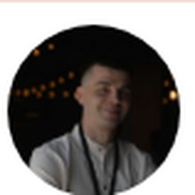
Во франшизе Avito на менеджера сопровождения приходилось двадцать точек. В «Других Мирах» дошли до сорока пяти, а сейчас у самых продвинутых территориальных менеджеров — семьдесят-восемьдесят. Качество не просело. В момент, когда по-старому пришлось бы нанимать двух-трёх дорогих управленцев, их не наняли.
Общая подписка на ChatGPT ничего не дала — ей пользовались единицы. Тогда взяли тех, кто пользуется активно, записали, как они решают конкретные задачи, и сложили в свою вики-библиотеку. Эту библиотеку раскатали на всех. У каждого отдела — свой проект в чате, чтобы не портить контекст. Самым заинтересованным открыли доступ к Cursor и Claude: через полгода в штате появился полноценный вайб-кодер, а остальные сотрудники пишут ему технические задания через GPT.
Готовая аналитика соцсетей стоит около 800 ₽ за учётную запись — при 320 точках это заметные деньги. Собрали свой дашборд: охваты, подписчики, динамика в разрезе сети, менеджера и города. Платят 14 долларов в неделю за API. Та же история с обучающей платформой: вместо 380 тысяч в год за готовое решение нашли открытый исходный код и допилили под себя.
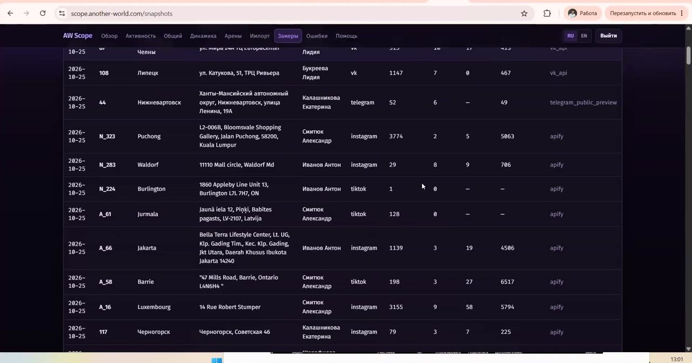
Было: пять продажников, пять человек клиентского сервиса, отдел контроля качества, юристы, финансисты, эйчар. Стало: пять человек и агенты на каждой из этих ролей. Сеть осталась прежней — 54 точки. Контроль качества, который раньше делали живые люди (и который продавали франчайзи как услугу), теперь полностью на агентах.
У «Хозяюшки» первую линию ведёт агент по имени Надя — она сидит во всех чатах с партнёрами, знает каждого франчайзи, отвечает на вопросы, разбирает претензии. Три раза в неделю сама рассылает обучающие материалы из базы знаний — в человеческой форме, с шутками. Среднее время первого ответа клиенту упало до двух минут: раньше было пять операторов по сменам, ночью и в выходные не отвечал никто.
Привычное SEO — это выдача Яндекса и Google. GEO (Generative Engine Optimization) — это когда человек спрашивает у нейросети, где почистить пуховик, и она отвечает «Хозяюшка». Отдельное направление лидогенерации, которым в сети занимаются уже год, параллельно с мониторингом районных чатов и нативными ответами в них.
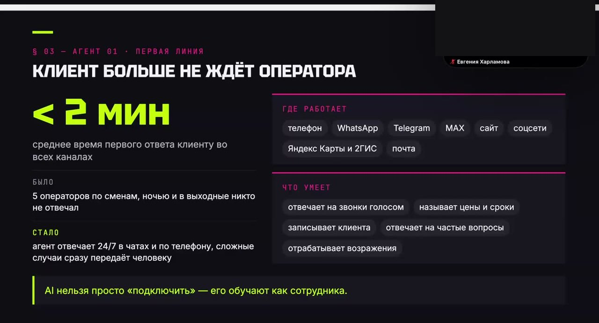
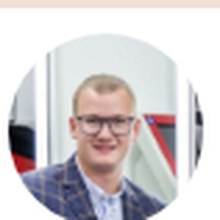
Агент ведёт карточки в Яндексе и 2ГИС: отвечает на отзывы, следит за актуальностью цен и фотографий, эскалирует проблемные случаи. На каждую оценку свой сценарий ответа — задача агента снять негатив и довести вопрос до решения. Сейчас в сети отвечено сто процентов отзывов, самый долгий без ответа висел сутки. Эту же логику распространили на сообщения в группах ВКонтакте.
Камеры дают картинку, терминал — данные об оплате. Система сопоставляет два источника и подсвечивает расхождения: если клиенту два часа делали окрашивание, а пробита короткая стрижка, кейс уходит в контроль качества. Ночью прогоняются все салоны разом. Дальше планируют определять по видео, какая услуга была оказана фактически.
В каждом терминале живёт агент: каждые десять минут проверяет состояние, прогоняет самодиагностику, пробует починить сам — переустановить драйвер, перенастроить кассовое оборудование. Если не справился, зовёт человека и прикладывает отчёт: что проверил, что получилось, какие гипотезы. Специалист не начинает с нуля — он видит, что уже исключено.
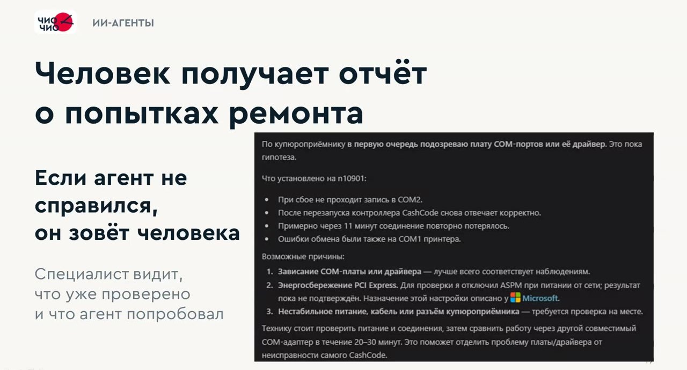
Вся архитектура держится на одном репозитории: туда сложены цифровой двойник компании, экономика, правила, ретроспективы. Claude Code управляет этим через агентов-исполнителей и агентов-критиков. На выходе — сайт, блог, приложения, контент, база партнёров. Программистов в контуре нет, собственник не программист.
Контент-завод: агенты ищут тему, сверяют с внутренними цифрами, проверяют, есть ли пробел в поисковой выдаче, пишут статью по правилам копирайтинга, прогоняют на факты, тон оф войс и стоп-слова, проверяют на машинные маркеры и публикуют. Вышло 143 разбора. Сейчас это 673 визита в неделю, 84% поискового трафика в блог даёт Яндекс. Система сама каждую неделю дописывает себе новые правила, анализируя, что зашло.
Через API amoCRM разобрали 2500 обращений за год и искали закономерности. Нашлась конкретная: если менеджер после разговора вернулся с расчётом под клиента в первые сутки, франшизу покупают в четыре с половиной раза чаще. Это сразу встроили в работу отдела продаж. Заодно заменили Roistat своей системой — бесплатно вместо десяти тысяч в месяц.
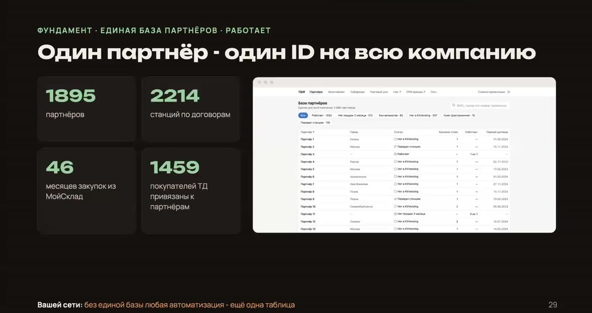
Ассистент ускоряет сотрудника внутри его компетенции. Партнёр добавляет компетенций, которых у сотрудника нет, — чтобы он не стоял в очереди к загруженному коллеге. Конвейер работает сам: процесс стартует по триггеру, проходит этапы и завершается без человека. Первые два требуют, чтобы кто-то запустил процесс и забрал результат, третий — нет.
Главное препятствие к внедрению агентов — не технологии, а отсутствие твёрдого описания процессов. Если на каждом шаге решение принимается интуитивно, автоматизировать нечего: агент не создаёт процесс, он работает поверх уже созданного. Сначала процесс, потом автоматизация, не наоборот.
В Точке сознательно оставили живую поддержку и дали клиенту переключатель: хочешь — говори с ботом по простому вопросу, хочешь — сразу с человеком. По исследованиям, около 70% людей жалуются на невозможность дозваться оператора. Поэтому граница автоматизации — это стратегический выбор, а не техническое ограничение.
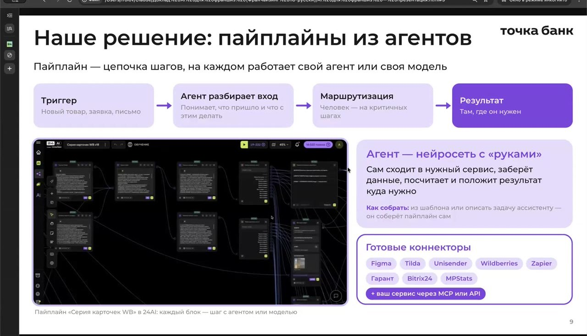
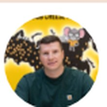
Обычная схема — управляющая компания один раз платит большую сумму и забирает продукт. Здесь иначе: УК вносит небольшую фиксированную сумму на входе, а дальше партнёры платят подписку за инструмент, которым пользуются каждый день, и УК получает с этих подписок комиссию. Разработчик остаётся техническим партнёром на постоянку и обязан развивать систему — иначе через полгода возникнет вопрос, за что платить.
Собрать себе небольшой дашборд или чек-лист можно и в одиночку. Но облачная CRM, которая считает продажи ста филиалов, раздаёт доступы и разбирает диалоги с сотнями клиентов ежедневно, на коленке не собирается. Франчайзер честно сказал: администрировать и чинить такое сам он не потянет, поэтому ключевым условием была постоянная техподдержка со стороны партнёра.
Главная перемена даже не в экономии на коде, а в том, что бизнес может позволить себе мелочи. Не каждую проблему нужно решать большой дорогой программой. Сотрудникам фотосалонов было неудобно работать в Photoshop — за пару дней сделали свой простой фоторедактор под их конкретные операции. Раньше такую задачу просто не стали бы разрабатывать.
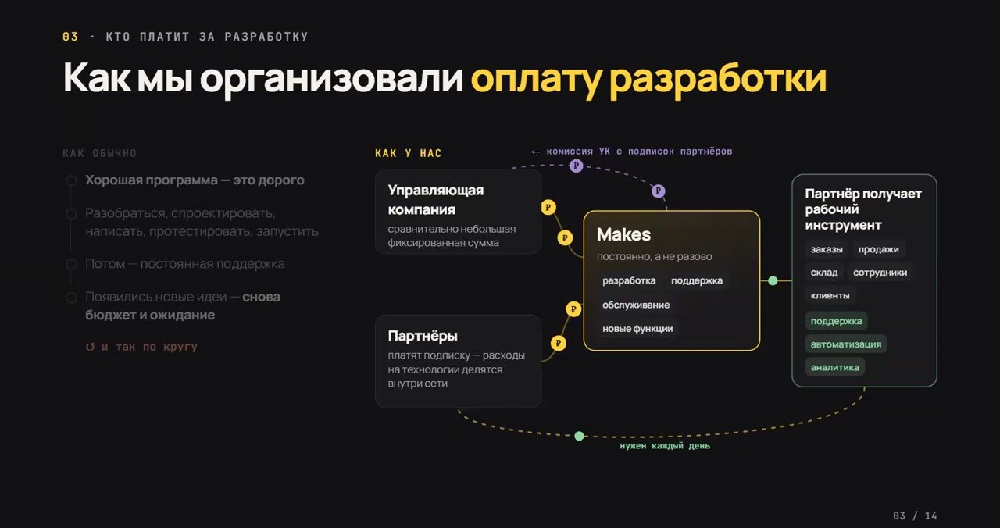
Три года назад за рейтинг сети по разным показателям просили от миллиона до трёх — предлагали собрать на Power BI. Собрал сам, заплатив только за подписку. И собрал ровно так, как видел нужным для партнёров, а не так, как понял подрядчик. Система подключена к YClients и достраивает то, чего в коробке нет: учёт абонементов и сертификатов, которые в массажном бизнесе дают больше половины выручки и выбираются месяцами.
Когда партнёры увидели себя в общем рейтинге, они начали смотреть, сколько нужно, чтобы догнать соседа. Топ-15 заметно прибавили в результатах. Побочный эффект: нашёлся партнёр, который весь год продаёт абонементов в полтора-два раза больше остальных — причём сам считал, что работает как все. Его разобрали на слёте, подход забрали остальные.
В базе сети сотни тысяч клиентов, у каждой студии — от пяти до тридцати тысяч. Система сама размечает: кому пора прийти, кто под угрозой оттока (ходил раз в три недели, а не появляется пятую), кто относится к золотым клиентам. Администратор не думает, за кого браться, — он открывает готовый список с историей и поводом для звонка.
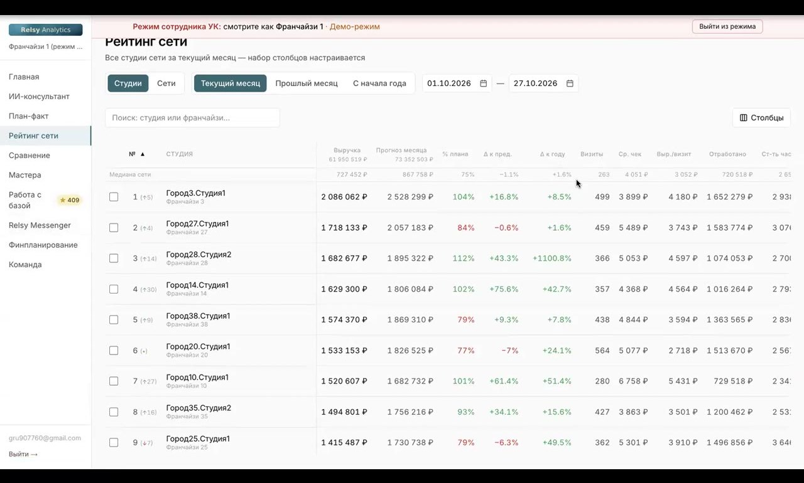
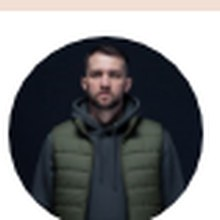
Сначала были разрозненные попытки без бюджета. Потом первые пилоты дали измеримый эффект — и это убедило топ-менеджмент вложиться. Теперь есть отдельная команда, правила, политики и замеры стоимости каждого внедрения. Важная оговорка: давняя автоматизация — не только плюс. Компания оказалась заложником собственной системы, вайб-кодингом её быстро не разогнать.
Две стратегии работают параллельно. Первая: раздать инструменты всем и ждать, что сотрудники сами найдут применение. Эффект накопительный, порядка десяти-двадцати процентов. Вторая: ударная группа из двух-трёх человек заходит в конкретный бизнес-домен и перестраивает процесс целиком — тогда и экономика считается, и окупаемость видна быстро.
В большой компании раздать подписки и надеяться на лучшее не выйдет. Появилась AI-политика: что можно скармливать моделям, а что нельзя. Расходы под наблюдением — видно, кто на что тратит токены. И главное правило: что бы ни сделал агент, за результат отвечает сотрудник, формулировка «это нейросеть накосячила» не принимается.
Dodo исторически снимает продукты сами, в своей фотолаборатории — принципиальная позиция про «настоящее». Провели эксперимент с генерацией: в слепом тесте разницу не увидел никто, а времени и денег уходит кратно меньше. Фотографов решили направить туда, где нужна именно съёмка, а типовые кадры отдать машине.
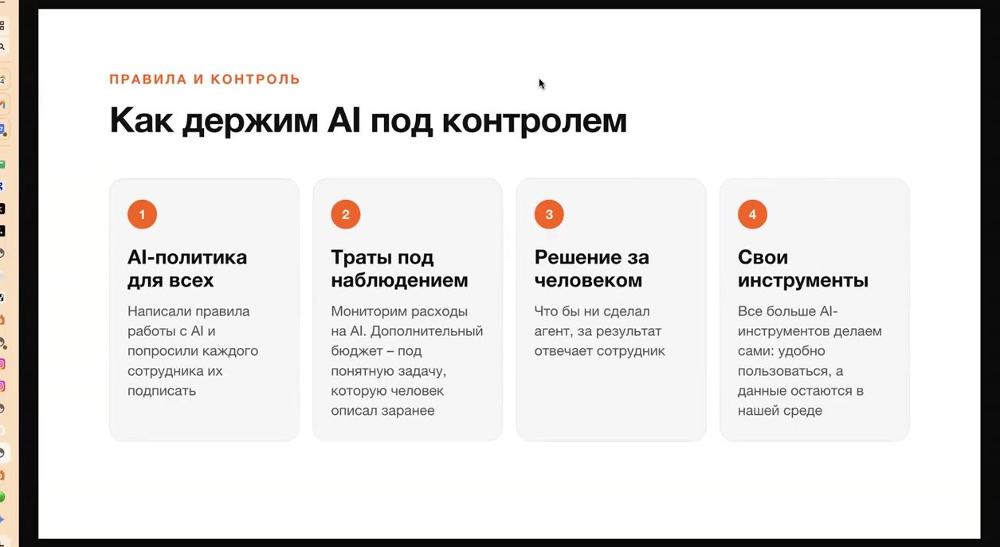
Начинали с себя, а не с найма. Почти никто из спикеров не нанял подрядчика, чтобы тот «внедрил ИИ». Все разбирались сами, и только потом подключали людей — своих или внешних.
Первым делом автоматизировали не продажи, а рутину управляющей компании. Отчёты, контроль качества, ответы партнёрам, сбор данных из разрозненных систем. Это то, что съедает штат и не растёт в деньгах.
Считали экономию в конкретных суммах. 380 тысяч в год на обучающей платформе, 10 тысяч в месяц на сквозной аналитике, от миллиона до трёх на дашборде, 800 рублей за учётную запись в сервисе аналитики соцсетей. Не «оптимизировали процессы», а перестали платить за конкретные подписки.
Упирались в одно и то же: в отсутствие порядка. Единая база партнёров, твёрдые критерии на каждом шаге процесса, описанные стандарты. Агент не наводит порядок — он масштабирует тот, который уже есть. Или тот хаос, который есть.
Восемь часов разборов с демонстрацией экрана, презентации спикеров и 60+ записей прошлых встреч — в закрытом чате «Масштаб».
Оформить доступСледующая встреча сообщества — онлайн-конференция Franch-Marketing 24 ноября: лидген, бренд, упаковка, площадки и ROMI на опыте сетей. Доступ по той же подписке.